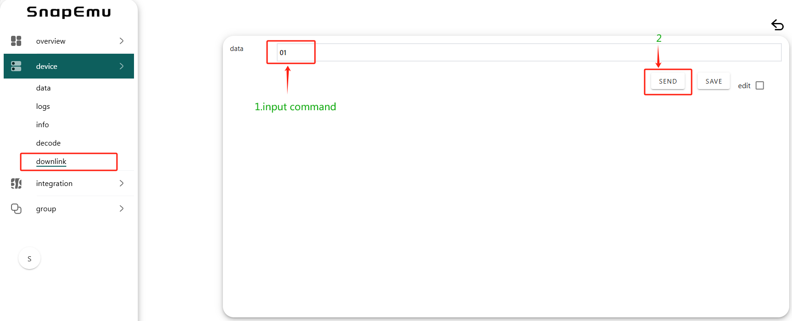
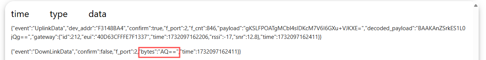
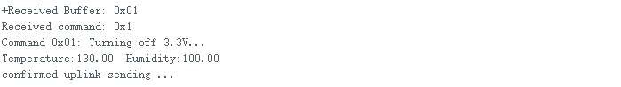
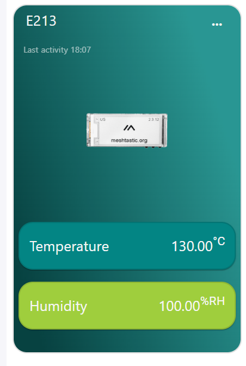
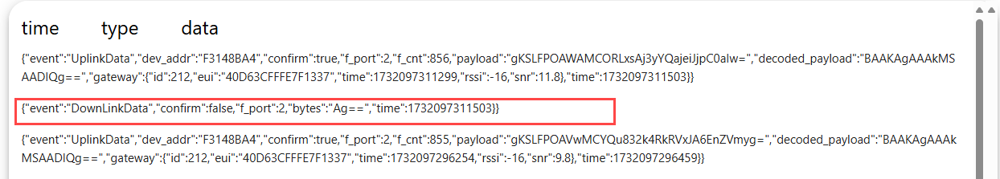
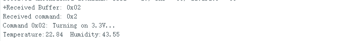
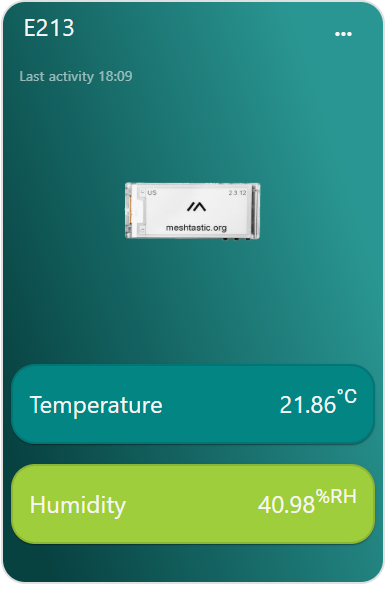

DownLinkData Example on Snapemu
Summary
Users can send downlinkdata commands on snapemu, it converts commands into payloads suitable for the LoRaWAN protocol format and sends them to the LoRaWAN gateway through the network. The gateway receives the snapemu’s commands and sends them to the device via LoRa wireless signals. The device receives commands, parses them, and executes tasks.
Operation
1.Define command in the LoRawan protocol, taking Visual Master E213 reading temperature and humidity sensors as an example, set command 1 to turn off the 3.3V power supply and command 2 to turn on the 3.3V power supply. The following is an example code for downlink data.
uint8_t command = 0; // To store received command
void downLinkDataHandle(McpsIndication_t *mcpsIndication) {
if (mcpsIndication->BufferSize > 0) {
// Print the received downlink data
Serial.print("+Received Buffer: ");
for (uint8_t i = 0; i < mcpsIndication->BufferSize; i++) {
Serial.printf("0x%02X ", mcpsIndication->Buffer[i]);
}
Serial.println();
// Extract the first byte as a command
uint8_t command = mcpsIndication->Buffer[0];
Serial.print("Received command: 0x");
Serial.println(command, HEX);
// Process according to commands
switch (command) {
case 0x01:
Serial.println("Command 0x01: Turning off LED...");
pinMode(18, OUTPUT);
digitalWrite(18, LOW); // Execute action
break;
case 0x02:
Serial.println("Command 0x02: Turning on LED...");
pinMode(18, OUTPUT);
digitalWrite(18, HIGH); // Execute action
break;
default:
Serial.println("Unknown command received.");
break;
}
} else {
Serial.println("No data received.");
}
}
2.Sending commands on Snapemu
Note: Send commands in hexadecimal format.

3.Users can view the commands sent in the log.
Note: The data in the log is encoded in base64 format.

After the platform issues command 1, the power will be turned off and the sensor values cannot be read.
Serial port display:

Snapemu display:

If the platform issues command 2, the power will turn on and the sensor values can be read correctly.

Serial port display:

Snapemu display:
